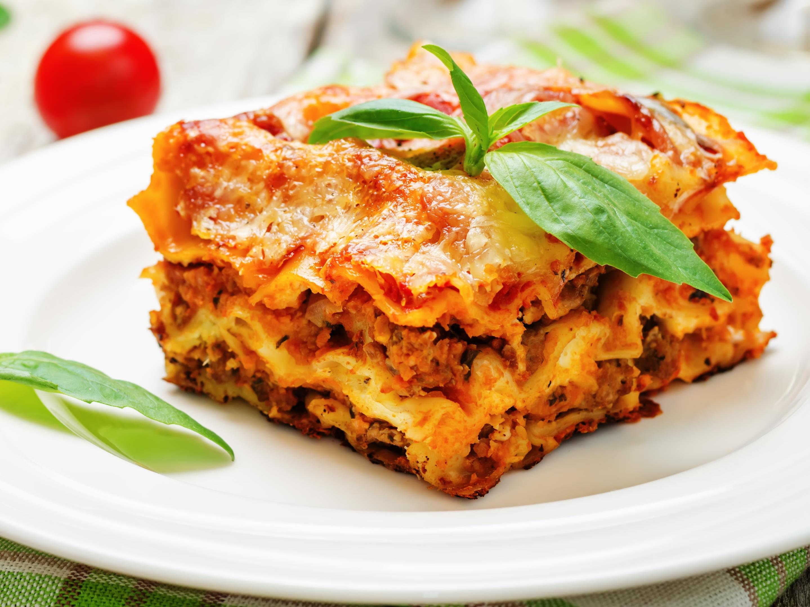

Lasagne

A recipe from my home in Emilia-Romagna, Italy. This lasagne verde made with spinach pasta cannot be beaten.
It's excellent if you want to impress some guests or even yourself.
It may be a bit time-consuming, but it's well worth the TLC you put into it.
Ingredients
- 5 ounces spinach - rinsed, stemmed, and dried
- 1 cup semolina flour
- 2 large eggs
- 3 ounces lean ground beef
- bechamel
Steps
- Cook pasta: Prepare an ice bath. Bring a large pot of lightly salted water to a boil. On a floured surface, divide pasta dough into 3 portions.
Roll each portion out to a thin sheet. Cook each pasta sheet in boiling water for 3 minutes; remove and dip in ice water; drain and dry on a clean cloth.
- Stir chicken livers into simmering sauce. Cook for 1 minute, remove from heat, and set aside.
- Assemble lasagna: Place 1 pasta sheet in the bottom of the prepared baking dish. Spread 1/3 of the ragu, 1/4 of the bechamel, 1/3 of the ricotta,
and 1/4 of the Parmesan over pasta. Repeat layers twice. Top with remaining bechamel and Parmesan; dot with butter.
- Bake in the preheated oven until the top is golden brown, about 30 minutes.